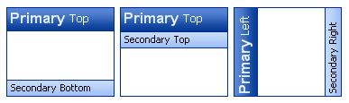
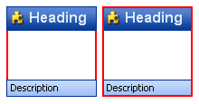
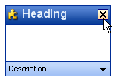
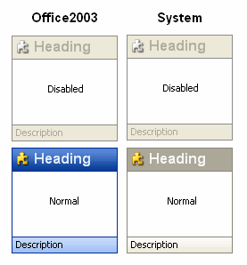

KryptonHeaderGroup
Use the KryptonHeaderGroup control to combine the benefits of the KryptonHeader and the KryptonGroup into one. When you need to group together related controls and provide a heading for them then the KryptonHeaderGroup should be used. You can position and define two headers within the header group control.
The content of the control is contained in the ValuesPrimary and ValuesSecondary properties. You can define Heading, Description and Image details within each of the ValuesPrimary and ValuesSecondary properties.
Appearance
The GroupBackStyle and GroupBorderStyle properties are used to determine the styling of the background and border of the main control. The group border is the border that encloses the entire control and does not control the border drawing of the individual headers. The group background is the client area that is used to contain child controls and does not control the background drawing of the individual headers.
To control the styling of the first header use the HeaderStylePrimary property and HeaderStyleSecondary for the second header. These have default values of Primary and Secondary respectively.
By default the primary header is positioned at the top of the control and the secondary header at the bottom. You can change this by altering the HeaderPositionPrimary and HeaderPositionSecondary values as can be seen in the examples in figure 1.

Figure 1 – HeaderPositionPrimary and HeaderPositionSecondary
If you do not require both headers to be displayed then just modify the HeaderVisiblePrimary and HeaderVisibleSecondary properties as appropriate. By combining the style, position and visibility properties you should be able to customize the layout and appearance to whatever you need.
Collapsing and Expanding Groups
By default the KryptonHeaderGroup has a Collapsed property value of False, indicating that the client area of the group should be shown. If you set Collapsed to True then the client area will be hidden from view. It will also use the CollapsedTarget property to decide on which headers should be visible in the collapse state. The default value is CollapseToPrimaryHeader and so will cause the primary header to be shown and the secondary header to be hidden. You can use the alternative values of CollapseToSecondaryHeader or CollapseToBothHeaders if you need an alternative collapsed appearance.
Note that the size of the header group will not change when you toggle the Collapsed property unless you set the AutoSize property to be True. The most common way of implementing an auto sizing header group is to dock it against one of the form edges. You will also want to modify the MinimumSize and MaximumSize values for the panel contained inside the header group (accessed from the Panel property of the KryptonHeaderGroup control). This is to ensure that when AutoSize is used it will calculate the required size appropriately.
The last property involved in collapsing functionality is called AuotCollapseArrow and defaults to True. If your KryptonHeaderGroup control has a ButtonSpec defined that has a Type of ArrowUp, ArrowDown, ArrowLeft or ArrowRight the it will automatically toggle the collapsed state when that ButtonSpec is clicked. It also inverts the Type and so ArrowUp would be automatically changed into ArrowDown. This property means you can implement a fully working collapsing/expanding header group without needing to write a single line of code. Check out the Expanding HeaderGroups (DockStyle) tutorial to see the detailed steps.
Two States
Only two possible states of Disabled and Normal are used by the header control. In order to customize the appearance use the corresponding StateDisabled and StateNormal properties. Each of these properties allows you to modify the background and border of the control as well as the background, border and content of the headers.
An additional property called OverlayHeaders is available in each of the state properties and determines if the headers are draw over the top of the group. Figure 2 shows an example of both settings where the border of the control is red and two pixels thick. In the first image you can see that OverlayHeaders is True and so the headers are drawn over the red border. In the second image the property is False and now the red border is drawn on top of the headers.

Figure 2 – OverlayHeaders True and False
To speed up the customization process an extra StateCommon property has been provided. The settings from this are used if no override has been defined for the state specific entry. Note that the specific state values always take precedence and so if you define the text font in StateNormal and StateCommon then the StateNormal value will be used whenever the control is in the Normal state. Only if the StateNormal value is not overridden will it look in StateCommon.
ButtonSpecs
You can add buttons to the individual headers by modifying the ButtonSpecs collection exposed by the KryptonHeaderGroup. Each ButtonSpec entry in the collection describes a single button for display on one of the headers. You can use the ButtonSpec to control all aspects of the displayed button including visibility, edge, image, text and more. At design time use the collection editor for the ButtonSpecs property in order to modify the collection and modify individual ButtonSpec instances. See the ButtonSpec section for more details. Figure 3 shows an example of a KryptonHeaderGroup with buttons.

Figure 3 – KryptonHeaderGroup with ButtonSpecs
AllowButtonSpecTooltips
By default the control will not show any tool tips when you hover the mouse over the user defined button specifications. If you set this boolean property to True then it will turn on tool tips for those button specs. Use the ButtonSpec.TooltipText property in order to define the string you would like to appear inside the displayed tool tip.
AllowButtonSpecTooltipPriority
If the parent Item has tooltips, and the button spec has tooltips, then
the default is show both when hovering over the buttonspec. This can be disabled
by setting AllowButtonSpecTooltipPriority to true, so that only 1 tooltip is
displayed when hovering over any part of the control.
UseMnemonic
When this property is defined as True for the KryptonHeaderGroup it will check each of the ButtonSpec instances in the ButtonSpecs collection. If the Text or ExtraText in a ButtonSpec matches the incoming mnemonic then the Click event for the ButtonSpec will be fired.
Examples of Appearance
Figure 4 shows the header group in the Disabled and Normal states for the Professional - Office 2003 and Professional - System palette modes.

Figure 4 – Examples of appearance